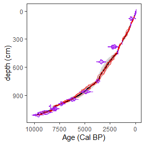
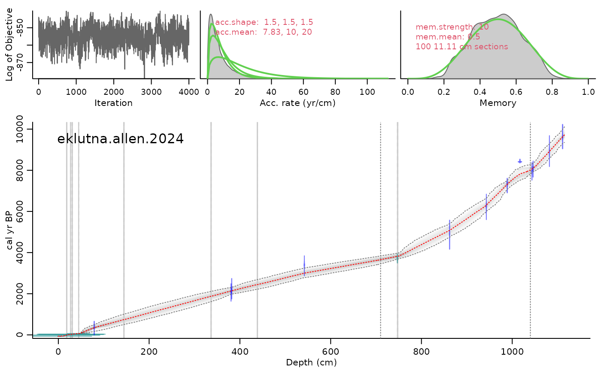
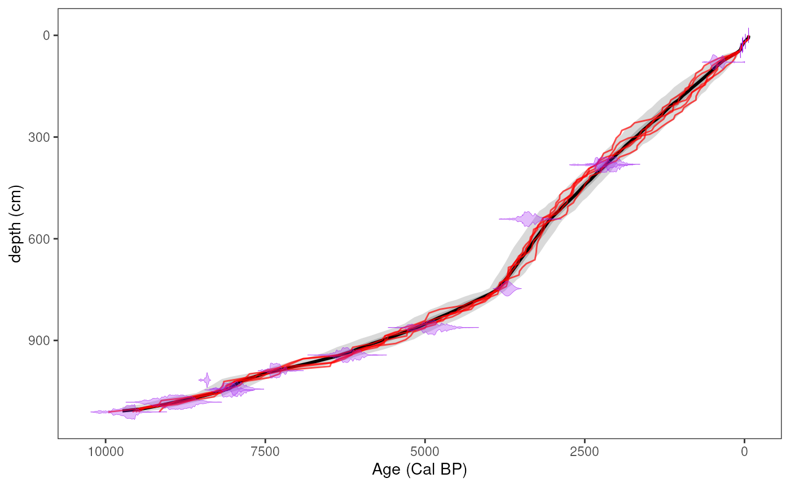
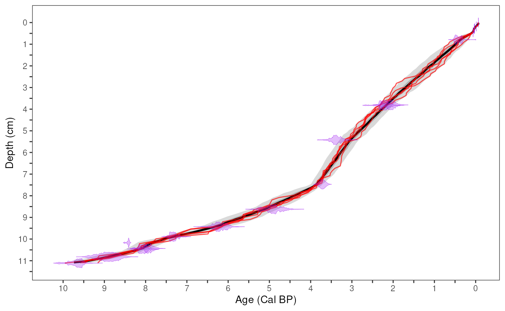
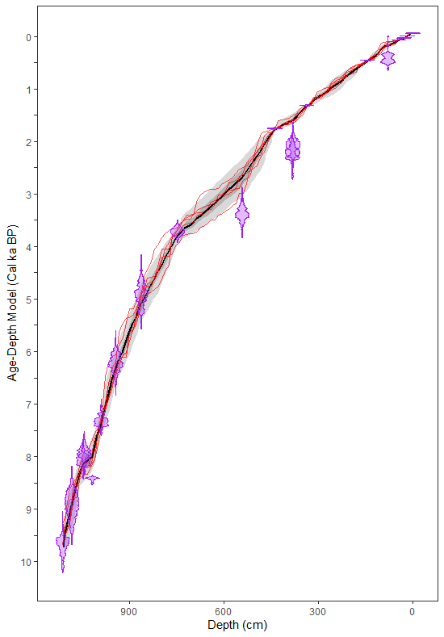

age_modeling.Rmd
library(paleosedr)
library(readxl)
library(purrr)
library(lipdR)
library(geoChronR)
#> Welcome to geoChronR version 1.1.12!
#>
#>
#> Attaching package: 'geoChronR'
#> The following objects are masked from 'package:lipdR':
#>
#> createTSid, pullTsVariable
library(ggplot2)Table of Contents
1. Standardized Data
2. LIPD Playground
3. Age Modeling
4. Plotting Sed. Rate and MAR
5. Plotting Multi-Proxy Records
6. Particle Size Heatmap
Before creating your age model, you will need to have your LipD Playground file all set and ready to go, with both paleo and chron data in it.
Once again, we are going to reference the Eklutna dataset. If your variables and filepath to the LipD file we made are named differently or saved somewhere else, change them for your own dataset.
# Load the data file
Eklutna <- lipdR::readLipd(system.file("extdata","eklutna.allen.2024.lpd", package = "paleosedr", mustWork = TRUE))
#> [1] "Loading 1 datasets from /home/runner/work/_temp/Library/paleosedr/extdata/eklutna.allen.2024.lpd..."
#> [1] "reading: eklutna.allen.2024.lpd"The following code will rely on the function runBacon and the geoChronR package. For tuning your specific age model, I recommend going to this website. It will help you tune the priors and make your age model fit the dataset (https://nickmckay.github.io/GeoChronR/articles/Introduction.html). At Eklutna, we needed to change the sedimentation rate at different core parts using slump, boundary, and bacon.acc.mean. Every lake and every record is unique, so you can set it up however you like.
eklutna_age <- runBacon(Eklutna,
lab.id.var = 'labID',
age.14c.var = 'age',
age.14c.uncertainty.var = 'age_uncertainty',
age.var = 'cal_age',
age.uncertainty.var = 'minus_error',
depth.var = 'depth',
reservoir.age.14c.var = NULL,
reservoir.age.14c.uncertainty.var = NULL,
rejected.ages.var = NULL,
ask = FALSE,
bacon.dir = "~/Cores",
suggest = FALSE,
close.connection = FALSE,
d.max = 1115,
slump = c(18,19, 26.5,27, 30,31, 44.5,45, 144,145, 336,337, 438,439, 747,748),
postbomb = 1,
boundary = c(710, 1040),
bacon.acc.mean = c(7.83,10,20),
accept.suggestions = TRUE,)
#> Looking for laboratory ID
#> [1] "Found it! Moving on..."
#> Looking for radiocarbon ages
#> [1] "Found it! Moving on..."
#> Looking for 1-sigma radiocarbon age uncertainty (+/-)
#> [1] "Found it! Moving on..."
#> Looking for calibrated/calendar ages
#> [1] "Found it! Moving on..."
#> Looking for 2-sigma calibrated age uncertainty (+/-)
#> [1] "Found it! Moving on..."
#> Looking for depth or position
#> [1] "Found it! Moving on..."
#> Looking for radiocarbon reservoir age offsets (deltaR)
#> radiocarbon reservoir age offsets (deltaR) does not seem to exist, moving on.
#> Looking for radiocarbon reservoir age offsets (deltaR) uncertainties
#> radiocarbon reservoir age offsets (deltaR) uncertainties does not seem to exist, moving on.
#> Looking for rejected ages
#> rejected ages does not seem to exist, moving on.
#> [1] "Variable choices for reuse..."
#> For future reference: here are the options you chose:
#> Find later with getLastVarString()
#> lab.id.var = 'labID', age.14c.var = 'age', age.14c.uncertainty.var = 'age_uncertainty', age.var = 'cal_age', age.uncertainty.var = 'minus_error', depth.var = 'depth', reservoir.age.14c.var = NULL, reservoir.age.14c.uncertainty.var = NULL, rejected.ages.var = NULL,
#> id age error depth cc dR dSTD ta tb
#> 1 1 -65 1.00000 0.0 0 0 0 33 34
#> 2 2 -14 1.00000 18.0 0 0 0 33 34
#> 3 3 25 1.00000 26.5 0 0 0 33 34
#> 4 4 33 1.00000 30.0 0 0 0 33 34
#> 5 5 63 3.00000 44.5 0 0 0 33 34
#> 6 6 398 63.00000 79.0 1 0 0 3 4
#> 7 7 2102 70.00000 380.5 1 0 0 3 4
#> 8 8 2235 77.00000 382.0 1 0 0 3 4
#> 9 9 3169 82.00000 542.0 1 0 0 3 4
#> 10 10 3713 72.00000 747.0 0 0 0 33 34
#> 11 11 4315 105.37005 862.0 1 0 0 3 4
#> 12 12 5440 117.57917 943.0 1 0 0 3 4
#> 13 13 6417 75.02781 989.0 1 0 0 3 4
#> 14 14 7635 19.97603 1017.0 1 0 0 3 4
#> 15 randomLabId_SwlKLU4Ed5 7113 93.00000 1043.5 1 0 0 3 4
#> 16 randomLabId_ie8xomb2Q1 7254 93.00000 1046.0 1 0 0 3 4
#> 17 18 8033 146.24705 1082.0 1 0 0 3 4
#> 18 19 8642 94.21770 1111.0 1 0 0 3 4
#> The run's files will be put in this folder: /home/runner/Cores/eklutna.allen.2024
#> Using a mix of cal BP and calibrated C-14 dates
#> Boundary set at depth(s) 704 1033
#> Will run 19,125,000 iterations and store 4,000
#> Reading /home/runner/Cores/eklutna.allen.2024/eklutna.allen.2024_100.bacon
#> Constant calibration curve.
#> IntCal20: Reading from file: /home/runner/work/_temp/Library/rintcal/extdata/3Col_intcal20.14C
#> GenericCal: Reading from file: /home/runner/work/_temp/Library/rintcal/extdata/postbomb_NH1.14C, 70 rows, 3 cols.
#> Marine20: Reading from file: /home/runner/work/_temp/Library/rintcal/extdata/3Col_marine20.14C
#> SHCal20: Reading from file: /home/runner/work/_temp/Library/rintcal/extdata/3Col_shcal20.14C
#> GenericCal: Reading from file: /home/runner/work/_temp/Library/rintcal/extdata/postbomb_NH1.14C, 70 rows, 3 cols.
#> Added det: 1: -65.0+-1.0 d=0 ResCorr= 0.0+-0.0 a=33 b=34 cc=Constant c. curve
#> Added det: 2: -14.0+-1.0 d=18 ResCorr= 0.0+-0.0 a=33 b=34 cc=Constant c. curve
#> Added det: 3: 25.0+-1.0 d=25.5 ResCorr= 0.0+-0.0 a=33 b=34 cc=Constant c. curve
#> Added det: 4: 33.0+-1.0 d=28.5 ResCorr= 0.0+-0.0 a=33 b=34 cc=Constant c. curve
#> Added det: 5: 63.0+-3.0 d=42 ResCorr= 0.0+-0.0 a=33 b=34 cc=Constant c. curve
#> Added det: 6: 398.0+-63.0 d=76 ResCorr= 0.0+-0.0 a=3 b=4 cc=IntCal20+postbomb_NH1.14C
#> Added det: 7: 2102.0+-70.0 d=375.5 ResCorr= 0.0+-0.0 a=3 b=4 cc=IntCal20+postbomb_NH1.14C
#> Added det: 8: 2235.0+-77.0 d=377 ResCorr= 0.0+-0.0 a=3 b=4 cc=IntCal20+postbomb_NH1.14C
#> Added det: 9: 3169.0+-82.0 d=536 ResCorr= 0.0+-0.0 a=3 b=4 cc=IntCal20+postbomb_NH1.14C
#> Added det: 10: 3713.0+-72.0 d=741 ResCorr= 0.0+-0.0 a=33 b=34 cc=Constant c. curve
#> Added det: 11: 4315.0+-105.4 d=855 ResCorr= 0.0+-0.0 a=3 b=4 cc=IntCal20+postbomb_NH1.14C
#> Added det: 12: 5440.0+-117.6 d=936 ResCorr= 0.0+-0.0 a=3 b=4 cc=IntCal20+postbomb_NH1.14C
#> Added det: 13: 6417.0+-75.0 d=982 ResCorr= 0.0+-0.0 a=3 b=4 cc=IntCal20+postbomb_NH1.14C
#> Added det: 14: 7635.0+-20.0 d=1010 ResCorr= 0.0+-0.0 a=3 b=4 cc=IntCal20+postbomb_NH1.14C
#> Added det: randomLabId_SwlKLU4Ed5: 7113.0+-93.0 d=1036.5 ResCorr= 0.0+-0.0 a=3 b=4 cc=IntCal20+postbomb_NH1.14C
#> Added det: randomLabId_ie8xomb2Q1: 7254.0+-93.0 d=1039 ResCorr= 0.0+-0.0 a=3 b=4 cc=IntCal20+postbomb_NH1.14C
#> Added det: 18: 8033.0+-146.2 d=1075 ResCorr= 0.0+-0.0 a=3 b=4 cc=IntCal20+postbomb_NH1.14C
#> Added det: 19: 8642.0+-94.2 d=1104 ResCorr= 0.0+-0.0 a=3 b=4 cc=IntCal20+postbomb_NH1.14C
#> Added det: NA: 8642.0+-8642000.0 d=1115 ResCorr= 0.0+-0.0 a=3 b=4 cc=IntCal20+postbomb_NH1.14C
#> Hiatus at: 1033.000000
#> Hiatus at: 704.000000
#> Since no file /home/runner/Cores/eklutna.allen.2024/eklutna.allen.2024_100.bacon.init was provided with initial values for the twalk, I will be using simulated values.
#> BaconFixed: Bacon jumps model with fixed c's.
#> K=100, H=2, dim=102, Seed=310741, Dc=11.110000, c(0)=0.000000, c(K)=1111.000000
#>
#> twalk: 19125000 iterations to run, Sun Apr 21 16:57:05 2024
#>
#> BUFSIZ is 8192, optimal block size changed to 4096
#> twalk: All stored iterations to be saved in file /home/runner/Cores/eklutna.allen.2024/eklutna.allen.2024_100.out
#> twalk: 5769216 iterations so far
#> Will finish in approx. 1 minutes and 11 seconds.
#> twalk: 17427456 iterations so far
#> Will finish in approx. 8 seconds.
#> twalk: Finished, 0.3% of moved pars per iteration (ratio 63277.931373/19125000). Output in file /home/runner/Cores/eklutna.allen.2024/eklutna.allen.2024_100.out,
#> Sun Apr 21 16:58:45 2024
#>
#> Writing two last points of the twalk in /home/runner/Cores/eklutna.allen.2024/eklutna.allen.2024_100.bacon.last.
#> bacon: 2243 WarnBeyondLimits warnings:
#> bacon: WARNING: calibration attempted beyond MinYr= -74.000000 or MaxYr= 1000000.000000
#> bacon: burn in (initial iterations which will be removed): 7650000
#> Eso es to...eso es to...eso es to...eso es toooodo amigos!
#> Warning, this will take quite some time to calculate. I suggest increasing d.by to, e.g., 10
#> Calculating age ranges...
#> | | | 0% | |= | 1% | |= | 2% | |== | 3% | |== | 4% | |=== | 4% | |==== | 5% | |==== | 6% | |===== | 7% | |====== | 8% | |====== | 9% | |======= | 10% | |======= | 11% | |======== | 11% | |========= | 12% | |========= | 13% | |========== | 14% | |========== | 15% | |=========== | 16% | |============ | 17% | |============ | 18% | |============= | 19% | |============== | 19% | |============== | 20% | |=============== | 21% | |=============== | 22% | |================ | 23% | |================= | 24% | |================= | 25% | |================== | 26% | |=================== | 26% | |=================== | 27% | |==================== | 28% | |==================== | 29% | |===================== | 30% | |====================== | 31% | |====================== | 32% | |======================= | 33% | |======================== | 34% | |========================= | 35% | |========================= | 36% | |========================== | 37% | |=========================== | 38% | |=========================== | 39% | |============================ | 40% | |============================ | 41% | |============================= | 41% | |============================== | 42% | |============================== | 43% | |=============================== | 44% | |=============================== | 45% | |================================ | 46% | |================================= | 47% | |================================= | 48% | |================================== | 48% | |=================================== | 49% | |=================================== | 50% | |==================================== | 51% | |==================================== | 52% | |===================================== | 53% | |====================================== | 54% | |====================================== | 55% | |======================================= | 56% | |======================================== | 57% | |========================================= | 58% | |========================================= | 59% | |========================================== | 60% | |=========================================== | 61% | |=========================================== | 62% | |============================================ | 63% | |============================================= | 64% | |============================================== | 65% | |============================================== | 66% | |=============================================== | 67% | |=============================================== | 68% | |================================================ | 69% | |================================================= | 70% | |================================================== | 71% | |=================================================== | 72% | |=================================================== | 73% | |==================================================== | 74% | |==================================================== | 75% | |===================================================== | 76% | |====================================================== | 77% | |====================================================== | 78% | |======================================================= | 78% | |======================================================== | 79% | |======================================================== | 80% | |========================================================= | 81% | |========================================================= | 82% | |========================================================== | 83% | |=========================================================== | 84% | |=========================================================== | 85% | |============================================================ | 85% | |============================================================ | 86% | |============================================================= | 87% | |============================================================== | 88% | |============================================================== | 89% | |=============================================================== | 90% | |================================================================ | 91% | |================================================================ | 92% | |================================================================= | 93% | |================================================================== | 94% | |=================================================================== | 95% | |=================================================================== | 96% | |==================================================================== | 97% | |==================================================================== | 98% | |===================================================================== | 99% | |======================================================================| 100%
#>
#> Preparing ghost graph...
#> | | | 0% | | | 1% | |= | 1% | |= | 2% | |== | 2% | |== | 3% | |== | 4% | |=== | 4% | |=== | 5% | |==== | 5% | |==== | 6% | |===== | 7% | |===== | 8% | |====== | 8% | |====== | 9% | |======= | 9% | |======= | 10% | |======= | 11% | |======== | 11% | |======== | 12% | |========= | 12% | |========= | 13% | |========== | 14% | |========== | 15% | |=========== | 15% | |=========== | 16% | |============ | 17% | |============ | 18% | |============= | 18% | |============= | 19% | |============== | 19% | |============== | 20% | |============== | 21% | |=============== | 21% | |=============== | 22% | |================ | 22% | |================ | 23% | |================= | 24% | |================= | 25% | |================== | 25% | |================== | 26% | |=================== | 27% | |=================== | 28% | |==================== | 28% | |==================== | 29% | |===================== | 29% | |===================== | 30% | |===================== | 31% | |====================== | 31% | |====================== | 32% | |======================= | 32% | |======================= | 33% | |======================== | 34% | |======================== | 35% | |========================= | 35% | |========================= | 36% | |========================== | 37% | |========================== | 38% | |=========================== | 38% | |=========================== | 39% | |============================ | 39% | |============================ | 40% | |============================ | 41% | |============================= | 41% | |============================= | 42% | |============================== | 42% | |============================== | 43% | |=============================== | 44% | |=============================== | 45% | |================================ | 45% | |================================ | 46% | |================================= | 46% | |================================= | 47% | |================================= | 48% | |================================== | 48% | |================================== | 49% | |=================================== | 49% | |=================================== | 50% | |=================================== | 51% | |==================================== | 51% | |==================================== | 52% | |===================================== | 52% | |===================================== | 53% | |===================================== | 54% | |====================================== | 54% | |====================================== | 55% | |======================================= | 55% | |======================================= | 56% | |======================================== | 57% | |======================================== | 58% | |========================================= | 58% | |========================================= | 59% | |========================================== | 59% | |========================================== | 60% | |========================================== | 61% | |=========================================== | 61% | |=========================================== | 62% | |============================================ | 62% | |============================================ | 63% | |============================================= | 64% | |============================================= | 65% | |============================================== | 65% | |============================================== | 66% | |=============================================== | 67% | |=============================================== | 68% | |================================================ | 68% | |================================================ | 69% | |================================================= | 69% | |================================================= | 70% | |================================================= | 71% | |================================================== | 71% | |================================================== | 72% | |=================================================== | 72% | |=================================================== | 73% | |==================================================== | 74% | |==================================================== | 75% | |===================================================== | 75% | |===================================================== | 76% | |====================================================== | 77% | |====================================================== | 78% | |======================================================= | 78% | |======================================================= | 79% | |======================================================== | 79% | |======================================================== | 80% | |======================================================== | 81% | |========================================================= | 81% | |========================================================= | 82% | |========================================================== | 82% | |========================================================== | 83% | |=========================================================== | 84% | |=========================================================== | 85% | |============================================================ | 85% | |============================================================ | 86% | |============================================================= | 87% | |============================================================= | 88% | |============================================================== | 88% | |============================================================== | 89% | |=============================================================== | 89% | |=============================================================== | 90% | |=============================================================== | 91% | |================================================================ | 91% | |================================================================ | 92% | |================================================================= | 92% | |================================================================= | 93% | |================================================================== | 94% | |================================================================== | 95% | |=================================================================== | 95% | |=================================================================== | 96% | |==================================================================== | 96% | |==================================================================== | 97% | |==================================================================== | 98% | |===================================================================== | 98% | |===================================================================== | 99% | |======================================================================| 99% | |======================================================================| 100%
#>
#> Mean 95% confidence ranges 501 yr, min. 3 yr between 28 and 29 cm, max. 855 yr at 896 cm
#> 94% of the dates overlap with the age-depth model (95% ranges)
#>
#> Warning, this will take quite some time to calculate. I suggest increasing d.by to, e.g., 10
#> | | | 0% | |= | 1% | |= | 2% | |== | 3% | |== | 4% | |=== | 4% | |==== | 5% | |==== | 6% | |===== | 7% | |====== | 8% | |====== | 9% | |======= | 10% | |======= | 11% | |======== | 11% | |========= | 12% | |========= | 13% | |========== | 14% | |========== | 15% | |=========== | 16% | |============ | 17% | |============ | 18% | |============= | 19% | |============== | 19% | |============== | 20% | |=============== | 21% | |=============== | 22% | |================ | 23% | |================= | 24% | |================= | 25% | |================== | 26% | |=================== | 26% | |=================== | 27% | |==================== | 28% | |==================== | 29% | |===================== | 30% | |====================== | 31% | |====================== | 32% | |======================= | 33% | |======================== | 34% | |========================= | 35% | |========================= | 36% | |========================== | 37% | |=========================== | 38% | |=========================== | 39% | |============================ | 40% | |============================ | 41% | |============================= | 41% | |============================== | 42% | |============================== | 43% | |=============================== | 44% | |=============================== | 45% | |================================ | 46% | |================================= | 47% | |================================= | 48% | |================================== | 48% | |=================================== | 49% | |=================================== | 50% | |==================================== | 51% | |==================================== | 52% | |===================================== | 53% | |====================================== | 54% | |====================================== | 55% | |======================================= | 56% | |======================================== | 57% | |========================================= | 58% | |========================================= | 59% | |========================================== | 60% | |=========================================== | 61% | |=========================================== | 62% | |============================================ | 63% | |============================================= | 64% | |============================================== | 65% | |============================================== | 66% | |=============================================== | 67% | |=============================================== | 68% | |================================================ | 69% | |================================================= | 70% | |================================================== | 71% | |=================================================== | 72% | |=================================================== | 73% | |==================================================== | 74% | |==================================================== | 75% | |===================================================== | 76% | |====================================================== | 77% | |====================================================== | 78% | |======================================================= | 78% | |======================================================== | 79% | |======================================================== | 80% | |========================================================= | 81% | |========================================================= | 82% | |========================================================== | 83% | |=========================================================== | 84% | |=========================================================== | 85% | |============================================================ | 85% | |============================================================ | 86% | |============================================================= | 87% | |============================================================== | 88% | |============================================================== | 89% | |=============================================================== | 90% | |================================================================ | 91% | |================================================================ | 92% | |================================================================= | 93% | |================================================================== | 94% | |=================================================================== | 95% | |=================================================================== | 96% | |==================================================================== | 97% | |==================================================================== | 98% | |===================================================================== | 99% | |======================================================================| 100%
#> | | | 0% | | | 1% | |= | 1% | |= | 2% | |== | 2% | |== | 3% | |== | 4% | |=== | 4% | |=== | 5% | |==== | 5% | |==== | 6% | |===== | 7% | |===== | 8% | |====== | 8% | |====== | 9% | |======= | 9% | |======= | 10% | |======= | 11% | |======== | 11% | |======== | 12% | |========= | 12% | |========= | 13% | |========== | 14% | |========== | 15% | |=========== | 15% | |=========== | 16% | |============ | 17% | |============ | 18% | |============= | 18% | |============= | 19% | |============== | 19% | |============== | 20% | |============== | 21% | |=============== | 21% | |=============== | 22% | |================ | 22% | |================ | 23% | |================= | 24% | |================= | 25% | |================== | 25% | |================== | 26% | |=================== | 27% | |=================== | 28% | |==================== | 28% | |==================== | 29% | |===================== | 29% | |===================== | 30% | |===================== | 31% | |====================== | 31% | |====================== | 32% | |======================= | 32% | |======================= | 33% | |======================== | 34% | |======================== | 35% | |========================= | 35% | |========================= | 36% | |========================== | 37% | |========================== | 38% | |=========================== | 38% | |=========================== | 39% | |============================ | 39% | |============================ | 40% | |============================ | 41% | |============================= | 41% | |============================= | 42% | |============================== | 42% | |============================== | 43% | |=============================== | 44% | |=============================== | 45% | |================================ | 45% | |================================ | 46% | |================================= | 46% | |================================= | 47% | |================================= | 48% | |================================== | 48% | |================================== | 49% | |=================================== | 49% | |=================================== | 50% | |=================================== | 51% | |==================================== | 51% | |==================================== | 52% | |===================================== | 52% | |===================================== | 53% | |===================================== | 54% | |====================================== | 54% | |====================================== | 55% | |======================================= | 55% | |======================================= | 56% | |======================================== | 57% | |======================================== | 58% | |========================================= | 58% | |========================================= | 59% | |========================================== | 59% | |========================================== | 60% | |========================================== | 61% | |=========================================== | 61% | |=========================================== | 62% | |============================================ | 62% | |============================================ | 63% | |============================================= | 64% | |============================================= | 65% | |============================================== | 65% | |============================================== | 66% | |=============================================== | 67% | |=============================================== | 68% | |================================================ | 68% | |================================================ | 69% | |================================================= | 69% | |================================================= | 70% | |================================================= | 71% | |================================================== | 71% | |================================================== | 72% | |=================================================== | 72% | |=================================================== | 73% | |==================================================== | 74% | |==================================================== | 75% | |===================================================== | 75% | |===================================================== | 76% | |====================================================== | 77% | |====================================================== | 78% | |======================================================= | 78% | |======================================================= | 79% | |======================================================== | 79% | |======================================================== | 80% | |======================================================== | 81% | |========================================================= | 81% | |========================================================= | 82% | |========================================================== | 82% | |========================================================== | 83% | |=========================================================== | 84% | |=========================================================== | 85% | |============================================================ | 85% | |============================================================ | 86% | |============================================================= | 87% | |============================================================= | 88% | |============================================================== | 88% | |============================================================== | 89% | |=============================================================== | 89% | |=============================================================== | 90% | |=============================================================== | 91% | |================================================================ | 91% | |================================================================ | 92% | |================================================================= | 92% | |================================================================= | 93% | |================================================================== | 94% | |================================================================== | 95% | |=================================================================== | 95% | |=================================================================== | 96% | |==================================================================== | 96% | |==================================================================== | 97% | |==================================================================== | 98% | |===================================================================== | 98% | |===================================================================== | 99% | |======================================================================| 99% | |======================================================================| 100%[1] "taking a short break..."Great! You now have a Bayesian age model for Eklutna! Now, lets visualize the data using the plot_age_model function.
eklutna_age_model <- plot_age_model(eklutna_age)
#> [1] "Found it! Moving on..."
#> [1] "Found it! Moving on..."
#> [1] "plotting your chron ensemble. This make take a few seconds..."
#> Scale for x is already present.
#> Adding another scale for x, which will replace the existing scale.
#> Scale for x is already present.
#> Adding another scale for x, which will replace the existing scale.
eklutna_age_model If you want to change the axis labels you can re reference your plot and add elements just like a ggplot. I normal do somehting like this, but make sure to change the breaks on both scales depending on your core depth and age:
eklutna_age_model <- eklutna_age_model+
scale_x_reverse(
breaks = c(10000, 9500, 9000, 8500, 8000, 7500, 7000, 6500, 6000, 5500, 5000, 4500, 4000, 3500, 3000, 2500, 2000, 1500, 1000, 500, 0),
labels = c("10", "", "9", "", "8", "", "7", "", "6", "", "5", "", "4", "", "3", "", "2", "", "1", "", "0")
) +
scale_y_reverse(
breaks = c(1150,1100,1050,1000, 950, 900, 850, 800, 750, 700, 650, 600, 550, 500, 450, 400, 350, 300, 250, 200, 150, 100, 50, 0),
labels = c("","11","", "10", "", "9", "", "8", "", "7", "", "6", "", "5", "", "4", "", "3", "", "2", "", "1", "", "0")
)
#> Scale for x is already present.
#> Adding another scale for x, which will replace the existing scale.
#> Scale for y is already present.
#> Adding another scale for y, which will replace the existing scale.
eklutna_age_model
You should now have an age model plot called eklutna_age_model. This plot is similar to a ggplot and can be manipulated with those commands until you get a plot you like. Similar to the depth plots in the last section, you can adjust the code and axis labels to match your desired length.
